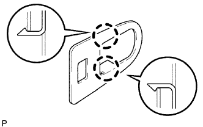
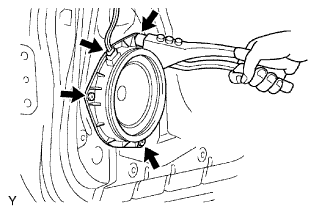

CỬA SAU > LẮP |
| 1. LẮP GIOĂNG CỬA SAU TRÁI |
Cài khớp 19 kẹp và lắp gioăng.
| 2. LẮP CỤM THANH GIẰNG CỬA SAU TRÁI |
Bôi mỡ MP vào các vùng trượt của thanh giằng cửa.
Lắp thanh giằng vào tấm cửa bằng 2 bu lông.
Hãy bôi keo vào bu lông.
Lắp thanh giằng cửa vào khung xe bằng bu lông.
| 3. LẮP LÓT PHÍA SAU TAY NẮM BÊN NGOÀI CỬA SAU |
Cài khớp 2 vấu để lắp miếng lót.
| 4. LẮP LÓT PHÍA TRƯỚC TAY NẮM BÊN NGOÀI CỬA SAU |
|  |
Cài khớp 2 vấu để lắp miếng lót.
| 5. LẮP KHUNG TAY NẮM NGOÀI CỬA SAU TRÁI |
Bôi mỡ MP vào các vùng trượt của khung.
Dùng khẩu hoa khế "T30", lắp khung bằng vít.
| 6. LẮP CỤM TAY NẮM BÊN NGOÀI CỬA SAU TRÁI |
Lắp lót phía trước và phía sau của tay nắm cửa bên ngoài.
Lắp tay nắm bằng cách đẩy nó theo hướng của các mũi tên trong hình vẽ.
| 7. LẮP NẮP CHE TAY NẮM BÊN NGOÀI CỬA SAU TRÁI |
Dùng đầu khẩu T30, lắp nắp (với ổ khoá cửa đã được lắp vào) bằng một vít.
| 8. LẮP CỤM KHOÁ CỬA SAU TRÁI |
Bôi mỡ MP vào các vùng trượt và quay của khoá cửa.
w/ Khoá cửa điện:
Lắp đệm dây điện khoá cửa mới.
Bôi keo vào các ren của 3 vít.
Dùng đầu khẩu hoa khế T30, lắp khoá cửa bằng 3 vít.
w/ Khoá cửa điện:
Nối giắc khoá cửa.
| 9. LẮP CỤM KÍNH CỬA SAU TRÁI |
 |
Lắp ray chạy kính.
Lắp kính vào cửa.
| 10. LẮP KÍNH TAI XE SAU TRÁI |
Lắp gioăng kính cửa tai xe sau lên kính.
Lắp kính cửa tai xe sau theo hướng của các mũi tên trong hình vẽ.
Lắp kính cửa vào bộ nâng kính dọc theo ray kính.
| 11. LẮP THANH NGĂN KÍNH CỬA SAU TRÁI |
Lắp thanh ngắn bằng 2 bu lông và vít.
| 12. LẮP CỤM MÔTƠ NÂNG HẠ KÍNH CỬA SỔ ĐIỆN BÊN TRÁI (w/ Cửa sổ điện) |
 |
Dùng tô vít đầu hoa khế T25, lắp môtơ bằng 3 vít.
| 13. LẮP BỘ NÂNG HẠ KÍNH CỬA SAU TRÁI |
 |
Bôi mỡ MP vào các vùng trượt và quay của bộ nâng hạ kính cửa sổ.
w/ Cửa sổ điện:
Lắp bộ nâng hạ bằng 4 bu lông.
w/o Cửa sổ điện:
Lắp bộ nâng hạ bằng 3 bu lông.
w/ Cửa sổ điện:
Lắp giắc nối.
| 14. LẮP NẮP LỖ SỬA CHỮA CỬA SAU TRÁI |
 |
Lắp nắp lỗ sửa chữa mới.
Lắp 2 vòng đệm.
Lắp giá bắt bằng 2 vít.
| 15. LẮP TAY NẮM BÊN TRONG CỬA SAU TRÁI |
Nối 2 cáp vào tay quay bên trong.
Dịch chuyển tay nắm bên trong theo hướng chỉ ra bởi mũi tên như trong hình vẽ để lắp tay nắm bên trong.
| 16. LẮP CỤM TAY NẮM NGOÀI CỬA SAU TRÁI |
 |
Cài khớp các vấu để lắp gioăng.
| 17. LẮP CỤM LOA NO.1 SAU TRÁI (w/ Loa phía sau) |
Lắp loa phía sau vào cửa.
|  |
Dùng dụng cụ tán đinh khí nén hoặc loại thường, hãy lắp loa phía sau bằng 3 đinh tán mới.
 |
 |
Lắp giắc nối.
| 18. LẮP TẤM ỐP TRANG TRÍ CỬA SAU TRÁI |
 |
Cài khớp 10 kẹp để lắp ốp cửa.
| 19. LẮP NẮP LỖ SỬA CHỮA CỬA SAU TRÁI |
 |
Cài khớp 2 vấu còn lại để lắp công tắc điều khiển cửa sổ.
Lắp giắc nối công tắc.
Cài khớp 2 kẹp và 8 vấu để lắp tấm đế cùng với công tắc.
| 20. LẮP CỤM TAY QUAY BỘ NÂNG HẠ KÍNH CỬA SAU (w/o cửa sổ điện) |
 |
Lắp phanh hãm vào tay nắm bộ nâng hạ.
Với cửa sổ đã được đóng hoàn toàn, hãy lắp tay nắm nâng hạ cửa và vòng đệm vào trục nâng hạ, như được chỉ ra trong hình vẽ.
| 21. NỐI CÁP VÀO CỰC ÂM ẮC QUY |
| 22. KIỂM TRA ĐÈN CẢNH BÁO SRS |
Kiểm tra đèn báo SRS (Xem trang Kích chuột vào đây).